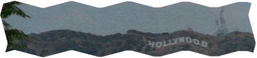

[
BACK to HAZE SCIENCE BACKGROUND
]
How Haze Redistributes Sunlight (or "Why is the Sky Blue?")
There is no significant atmosphere on the moon. So unless an astronaut or meteor has kicked up some dust, there is no haze. All the light from the Sun arrives in a straight line from the Sun. No sunlight arrives from anywhere else in the sky.
The atmosphere greatly changes the way sunlight reaches the surface of Earth. Most of the light you can see comes directly from the Sun. But some is scattered around the sky by molecules of air (Rayleigh scattering) and by the myriad of tiny particles or aerosols drifting in the air (Mie scattering). These particles or aerosols include water droplets. smoke, salt, pollen, carbon, spider webs, bacteria, sulfates, plant matter, synthetic fibers and dust (from soil and even volcanoes and meteors.)
Rayleigh and Mie scattering control the way the sky appears. Since molecules of air are about the size of a wavelength of blue light, blue light is scattered very efficiently by the atmosphere. This is why the sky is often blue, especially on a clear day after a cold front has passed by or during certain times in the tropics.
What happens to the blue when the sky is hazy? While air molecules scatter blue light best, aerosols and particles are so much larger scatter all wavelengths of sunlight well. This means that a sky full of aerosols looks pale blue or even milky white. Aerosols can be natural, as when water forms on tiny particles of salt from the oceans. Forest fires can cause haze that covers many thousands of square kilometers. Volcanic emissions can also form a natural haze, as residents of the Big Island of Hawaii know all too well. And major volcano eruptions, like Mount Pinotubo in 1991, can cause a blanket of haze to cover the entire Earth for several years or more.
Thick, milky white haze covers much of the Eastern United States, Europe and parts of Asia during the hot months of summer. Although some of this haze is created when gases from trees react with sunlight, much of it is caused by sulphates emitted by power plants that burn coal which contains sulphur. Up in the air the sulphate particles become coated with water, which forms an aerosol that efficiently scatters visible wavelengths of light. Another down side of sulphate aerosols is that they are acidic and contribute to acid rain and fog.
When there is considerable pollution from gasoline engines, a layer of brown smog may develop in the sky. This layer contains nitrogen oxides which absorb blue light and thus appear brown.

Haze-SPAN
, A project of the
Concord Consortium
Copyright © 1997. All rights reserved.
Last updated: 18-Apr 1997: http://www.concord.org/haze/causes.html
Questions about Haze-SPAN:
carolyn@concord.org
| about this site:
webmaster@concord.org